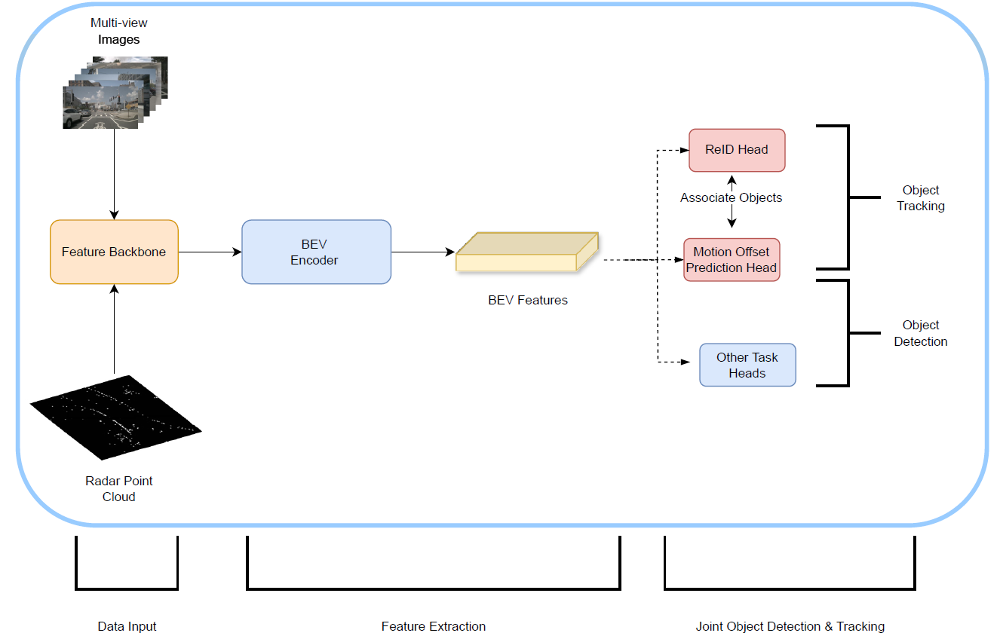
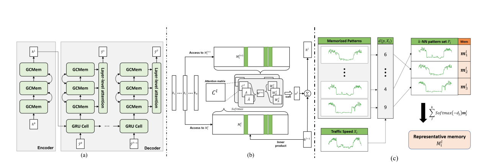
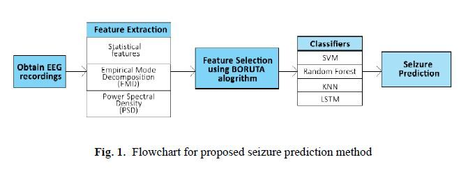
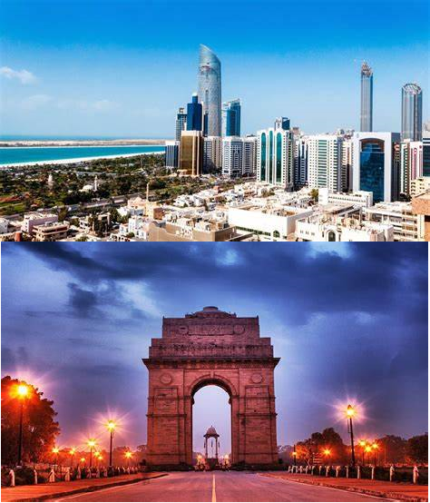

|
Debargho Basak Hi, I’m Debargho Basak, a Machine Learning Engineer with expertise in developing AI-driven solutions for real-world applications. My experience spans deep learning, computer vision, radar-based systems, and natural language processing. I specialize in creating efficient, scalable models tailored to hardware constraints and production environments, with a strong focus on bridging advanced AI research and practical innovation. |

|
Research and Selected ProjectsI'm interested in applied machine learning and computer vision, specializing in object detection, tracking, and generative AI. My work bridges research and real-world applications, leveraging cutting-edge technologies like Vision Transformers, LLMs and multimodal data fusion to develop scalable, impactful solutions. Selected works are highlighted. |
|  |
Advancing 3D Object Tracking:
A Deep Neural Network Framework for
Re-Identification and Motion Estimation
using Radar and Camera
Debargho Basak, Philipp Wolters, Prof. Dr.-Ing. habil. G. Rigoll 2024 This thesis advances 3D object tracking by developing an end-to-end deep neural network integrating camera and radar data for multi-modal tracking. It introduces a novel framework for object re-identification and motion estimation, significantly improving tracking accuracy and robustness in adverse conditions. Using the NuScenes dataset, the system demonstrated a +4.23 % AMOTA improvement in camera-radar fusion, highlighting its potential for real-world applications like autonomous driving and robotics. Master's Thesis |
|  |
A-Pattern-Matching-Memory-network-for-Traffic-forecasting
Debargho Basak 2023 This work implements a cutting-edge framework for multivariate time series forecasting, leveraging dual attention mechanisms and autoencoders. Inspired by the paper "Learning to Remember Patterns: Pattern Matching Memory Networks for Traffic Forecasting," this project integrates temporal and spatial dependencies to improve the accuracy of traffic predictions. Developed as part of the TUM course "Machine Learning for Graphs and Sequential Data (IN2323)," it showcases an advanced approach to tackling real-world challenges in traffic forecasting by combining deep learning and memory networks. |

|
3D-LiDAR-to-Image
Debargho Basak 2022 This project presents a comprehensive solution for converting 3D LiDAR point clouds into 2D images. It supports various LiDAR models, including Velodyne's HDL and VLP series, as well as Ouster's OS-1 series, accommodating multiple point cloud formats such as XYZ, XYZI, and XYZIRFN. The project offers flexible image output modes—SINGLE, GROUP, STACK, and ALL—to cater to diverse application needs. It is a reimagining of the 'cloud_to_image' tool from the University of Bonn, this implementation enhances the visualization and analysis of LiDAR data, facilitating its integration into image-based workflows |
|  |
Comparative Analysis of Intelligent Classifiers for Seizure Detection Using EEG Signals
Debargho Basak, Arshedeep Singh, Upamanyu Das, Priya Chugh, Jyoti Yadav ICACIT, 2021 This paper presents a non-patient-specific approach for epileptic seizure prediction using EEG signals and machine learning classifiers. The methodology includes channel selection (Boruta algorithm), feature extraction (statistical features, intrinsic mode functions, and power spectral density), and testing classifiers like SVM, random forest, KNN, and LSTM. Using a large-scale EEG dataset, this work supports real-time seizure prediction and advances epilepsy research. Bachelor's Thesis |

|
Object-Detection Framework for multiple Tasks
Debargho Basak 2020 This project offers resources on object detection, including discussions on two-stage versus one-stage detectors and details about the TensorFlow detection model zoo. It serves as a foundational guide for understanding various object detection models and their applications. |
Work Experience |
|
Machine Learning Engineer September 2024 - PresentI develop radar-based machine learning models for ADAS, focusing on low-latency, hardware-aware solutions like pointwise vision transformers optimized for ARM-based processors. My work includes creating BEV representations and leveraging multi-head self-attention to enhance object detection, tracking, and classification for real-time autonomous applications. I collaborate across global teams and support patent filings in radar transformer and multi-sensor fusion technologies. |
|
|
Computer Vision Engineer May 2023 - July 2024At MAN, I contributed to enhancing multimodal perception systems for autonomous Trucks by developing neural networks for robust depth estimation and real-time data processing using CUDA and distributed computing. My innovations reduced data processing times by 20%, optimized computational algorithms, and integrated efficient perception models for camera and radar fusion in 3D perception tasks, surpassing state-of-the-art baselines. |
Education |
|
M.Sc. in Computer Science Focus Areas: Deep Learning, Computer Vision and Image Processing, Natural Language Processing, Scalable Machine Learning, 3D Perception and Multi-Modal Fusion, High-Performance Computing Thesis: Advancing 3D Object Tracking: Deep Neural Network Framework for Re-Identification and Motion Estimation using Radar and Camera, Thesis submitted to BMVC (British Machine Vision Conference) 2024 | |

|
B.E. (Bachelors of Engineering) in Instrumentation and Control Focus Areas: Control Systems Engineering, Robotics and Automation, Embedded Systems and IoT, Signal Processing, AI Applications in Electronics, Instrumentation Design and Calibration Thesis: Comparative Analysis of Intelligent Classifiers for Seizure Detection Using EEG Signals, published at ICACIT 2021 |
Hobbies and Fun Facts |
|
I hold the highest piano qualification from the ABRSM, Grade 8, and was accepted to study at the prestigious Royal College of Music in the UK, although I chose not to take the opportunity. In my spare time, I enjoy playing the piano and exploring works by composers such as Erik Satie, György Ligeti, and Olivier Messiaen. Music remains a significant part of my life, and I am a dedicated student of this art form. | |
|
I am a passionate rugby fan and had the privilege of playing rugby during my time at The British International School Abu Dhabi. My favorite team is the South African Springboks, whose resilience and dynamic playing style have always inspired me. Playing rugby allowed me to experience the value of multicultural teams, teamwork, and discipline, while also giving me the chance to make lifelong friends from all around the world. These experiences have shaped my perspective and instilled important life values that extend beyond the field. | |
|  |
I was born in India but spent most of my formative years in Abu Dhabi, UAE. Growing up in this vibrant and multicultural city, I experienced the rich diversity of cultures and traditions, which shaped my outlook on life. It was here that I cultivated my passions for academics, sports like rugby, and the arts, particularly music, while attending The British International School Abu Dhabi. Living in such a dynamic setting taught me the importance of adaptability, curiosity, and building connections across different cultures, values that continue to guide me today. |
|
Feel free to steal this website's source code. Do not scrape the HTML from this page itself, as it includes analytics tags that you do not want on your own website — use the github code instead. Also, consider using Leonid Keselman's Jekyll fork of this page. |